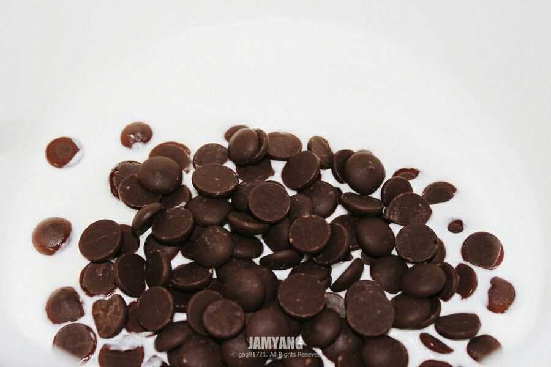
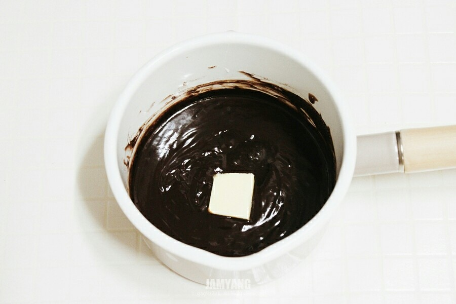
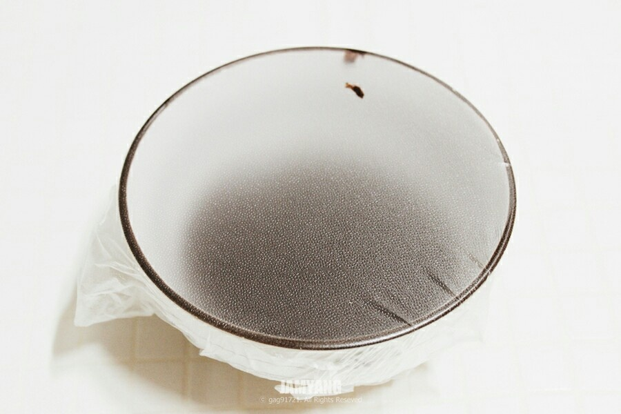
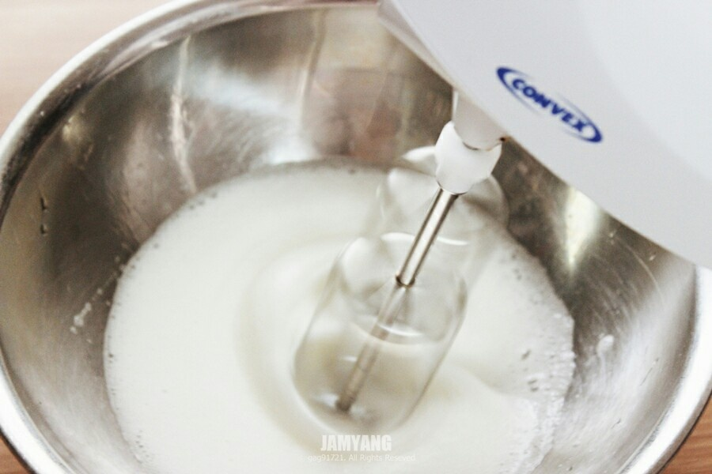
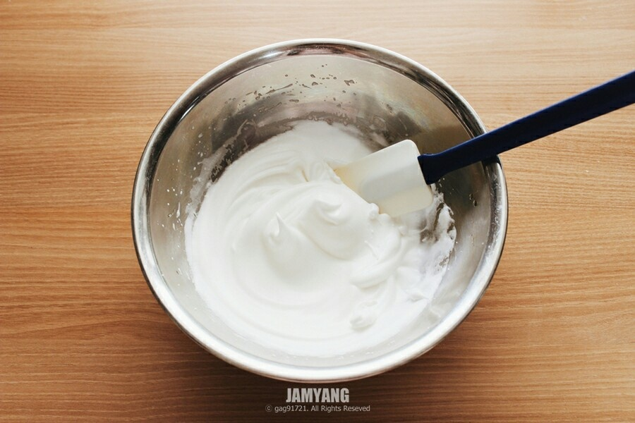
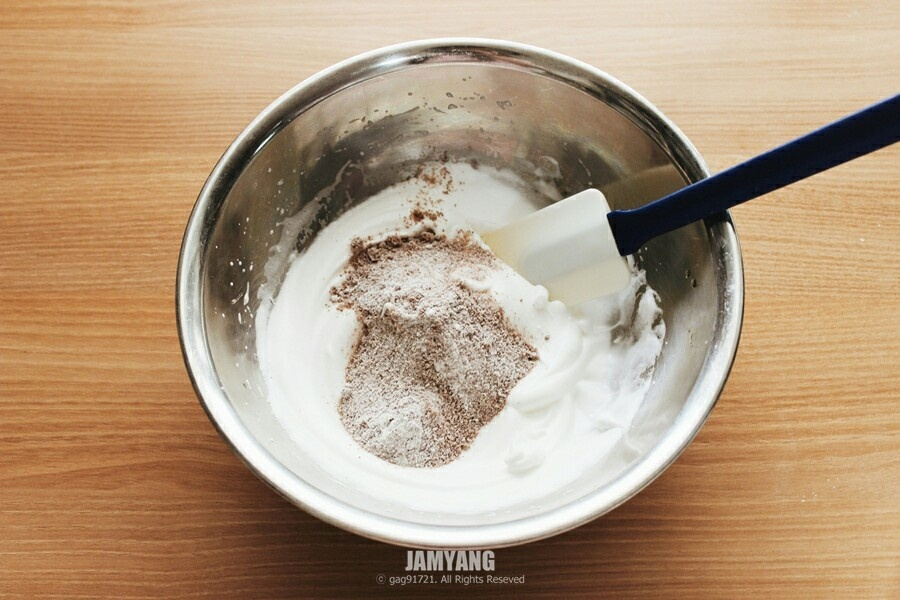
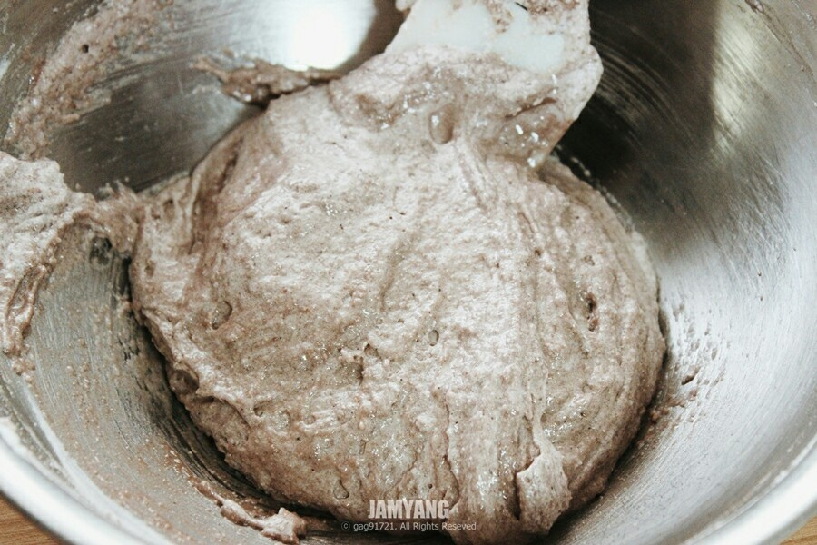
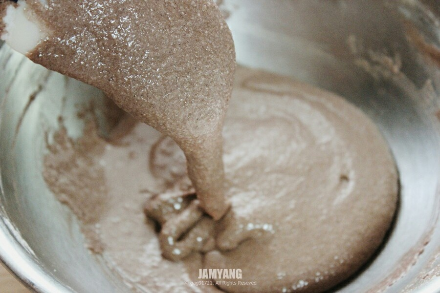
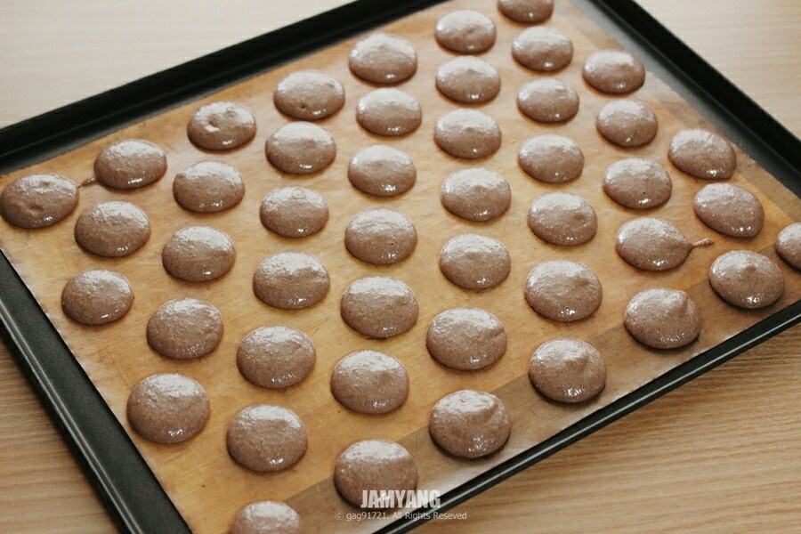
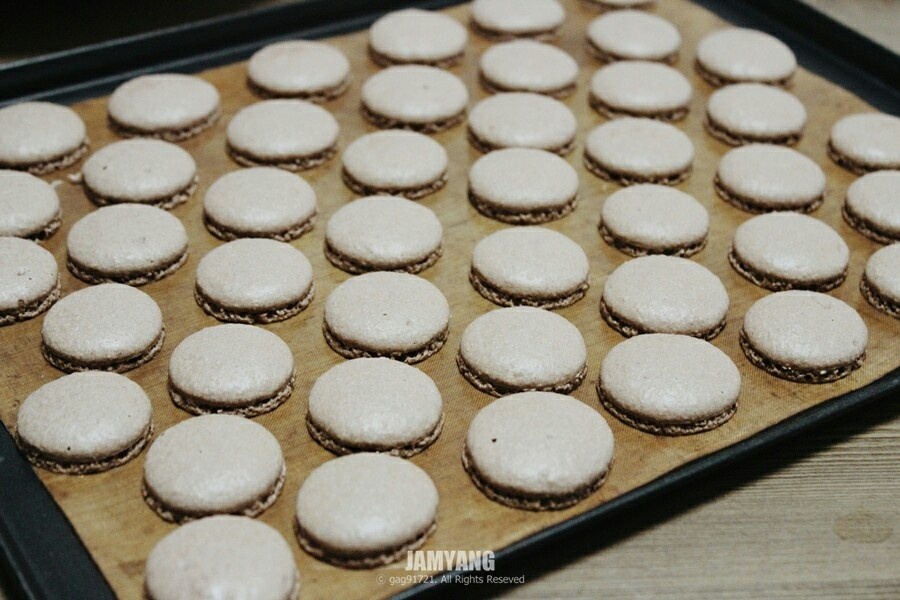

"초코마카롱 레시피 입니다."
1. 따뜻하게 만든 생크림에 초콜릿을 넣고 녹여주세요
2. 버터, 럼, 물엿을 넣고 섞어주세요
3. 랩을 씌워서 공기가 들어가지 않도록 밀폐해서 냉장고에 식혀주세요
4. 깨끗한 볼에 흰자를 넣고 거품을 어느 정도 낸 다음 설탕을 나눠가며 섞어주세요
5. 뿔이 서는 단단한 머랭을 만들어주세요
6. 체친 가루류 (슈가파우더, 아몬드가루, 코코아가루) 를 넣어주세요
7. 고무주걱을 아래에서 위로 뒤집어가며 섞어주세요 볼 옆면에 반죽을 바른다는 느낌으로 붙여준 뒤 아래로 옮겨서 위로 올려주는 작업을 15회 정도 반복
8. 반죽의 농도는 떨어져서 자국이 남는 정도로 만들어주세요
9. 짤주머니에 넣은 반죽을 지름 3cm 크기로 팬에 짜주세요 실온에서 30분에서 1시간 정도 두고 윗면을 손가락으로 눌렀을때 묻어나지않을 정도까지 말려주세요
10. 170도로 예열한 오븐에서 10-15분간 구워주세요. 짤주머니에 넣은 가나슈를 구워진 마카롱이 맞춰서 넣어주세요
